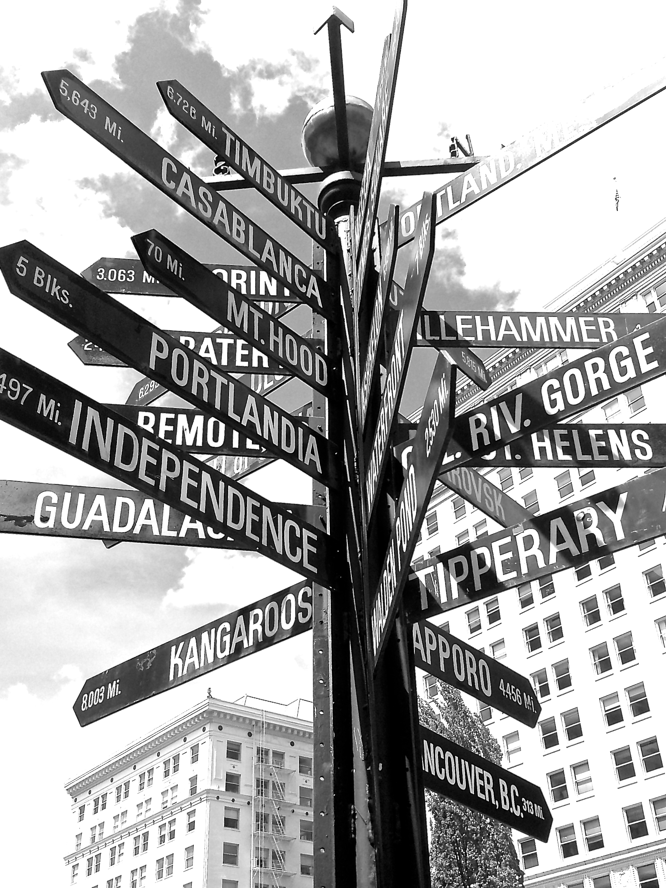

Design Best Practice Checklist
To view a detailed evaluation of the JavaJam site created in earlier chapters, please select a Design Best Practice topic from the tabs on the right.
Navigation
- The main navigation links are clearly and consistently labeled (true in all browser versions I tested).
- The navigation is definitely easy to use for the target audience. It is, in fact, too obvious.
- There are no text links in the footer section of the page.
- Navigation for the JavaJam site does not appear to be structured in an unordered list.
- Navigation aids are not used.
- Not all navigation links work. The link called "jobs" does not work.